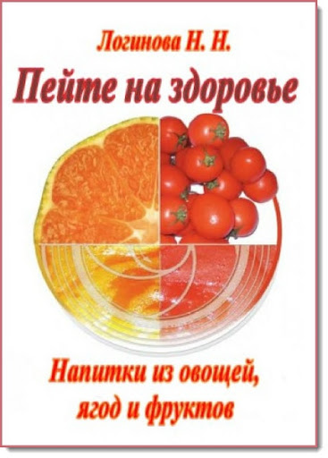

Разные напитки из овощей, ягод и фруктов

По материалам книги " Напитки из овощей, ягод и фруктов "." Натальи Логиновой . "
А также из других источников Интернет
Уважаемый Читатель - после ознакомления с Книгой
рекомендую Вам заказать ее бумажное издание.
Плодовые и ягодные растения широко используют при составлении диетических рационов, при лечении больных, страдающих различными заболеваниями. При сердечно-сосудистых заболеваниях (атеросклероз, гипертоническая болезнь, инфаркт миокарда, недостаточность кровообращения и др.) особенно полезно применение плодов и ягод. Они как носители щелочных валентностей способствуют устранению ацидоза, развивающегося при недостаточности кровообращения, выведению накапливающихся продуктов обмена, так как бедны азотистыми веществами и богаты водой, которая всасывается медленнее и выводится быстрее, чем свободная жидкость.
Книга адресована широкому кругу любознательных читателей.
- Вступление.
- Напитки из овощей.
- Морковь.
- Помидоры.
- Свекла.
- Картофель.
- Петрушка.
- Огурцы.
- Тыква.
- Капуста.
- Редька и редис.
- Напитки из фруктов.
- Апельсины.
- Лимоны.
- Мандарины.
- Абрикосы.
- Вишня.
- Дыня.
- Виноград.
- Яблоки.
- Груши.
- Напитки из ягод.
- Шиповник.
- Калина.
- Клубника, земляника.
- Рябина.
- Черника.
- Брусника.
- Клюква.
- Боярышник.
- Крыжовник.
- Поленика.
- Витаминные букеты.
- Напитки казачьи старинные.
- Напитки ассорти.